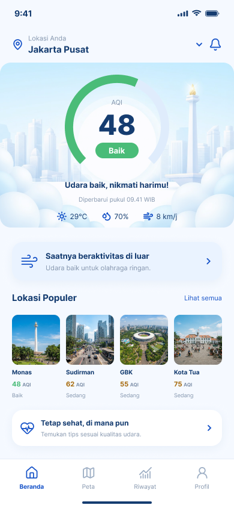
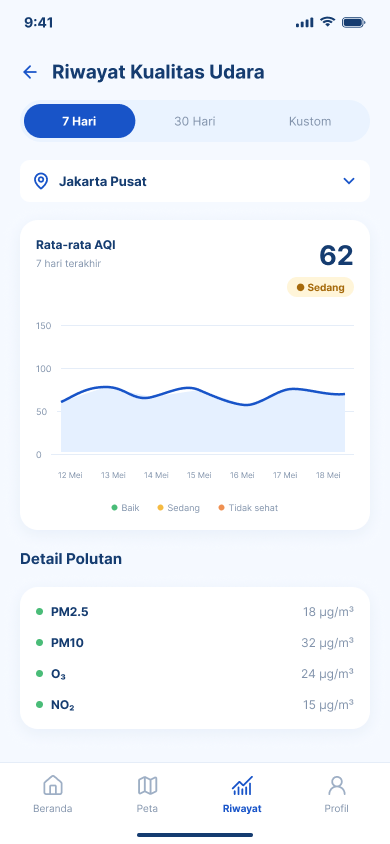
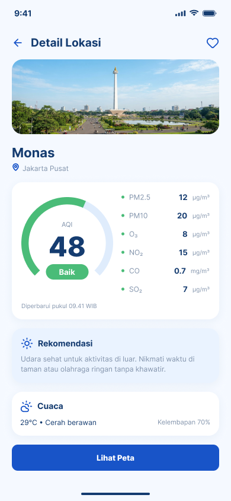
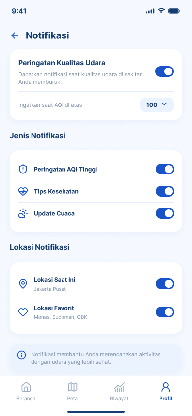
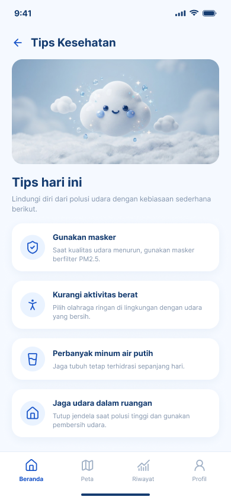

Know Your Air
Udara Jakarta tidak harus ditebak. Awanin menampilkan kualitas udara secara real-time dan menerjemahkannya menjadi keputusan harian: bolehkah lari pagi hari ini? Perlu masker? Kapan udaranya paling bersih?
Masalahnya bukan udaranya — informasinya
Data kualitas udara tersedia, tapi berupa angka teknis yang tersebar di banyak sumber dan sulit ditafsirkan menjadi tindakan.
Angka µg/m³ tidak menjawab pertanyaan harian
Warga Jakarta mengambil keputusan setiap hari — berangkat kerja, lari pagi, mengajak anak bermain — tanpa tahu kondisi udara yang mereka hirup. Informasi teknis memang ada, tetapi tidak menjawab pertanyaan sederhana: apakah aman beraktivitas di luar hari ini?
Awanin menerjemahkan AQI menjadi aksi
Ring AQI berwarna, saran intensitas olahraga, jendela waktu dengan udara terbaik hari ini, peringatan saat kategori berubah, dan riwayat untuk memilih hari terbaik — semuanya dalam bahasa sehari-hari, bukan bahasa stasiun pengukuran.
Fitur utama
Dibangun dengan React Native + Expo, dengan data real-time dari Open-Meteo.
Ring AQI
Angka AQI dengan kategori berwarna (Baik → Berbahaya), PM2.5, PM10, dan kondisi cuaca dalam satu layar.
Waktu terbaik olahraga
Jendela dua jam dengan AQI terendah yang masih tersisa hari ini, plus saran intensitas olahraga.
Sekitar
Lokasi terpantau diurutkan berdasarkan jarak sebenarnya dari posisi perangkat Anda.
Riwayat 7–30 hari
Rata-rata, tertinggi, dan terendah per hari — untuk melihat pola dan memilih hari terbaik beraktivitas.
Peringkat nasional
100 kota di 38 provinsi dalam satu layar, lengkap dengan perubahan AQI 24 jam dan pencarian kota.
Notifikasi cerdas
Peringatan hanya saat kategori AQI berubah — dengan ambang, jam tenang, dan cooldown yang bisa diatur.
Tips kesehatan
Saran praktis menghadapi polusi: masker, aktivitas luar ruangan, sirkulasi udara, dan pola makan.
Tetap jalan saat sinyal buruk
Bacaan terakhir tersimpan di perangkat dan ditandai "data tersimpan", bukan layar error.
Delapan layar, satu bahasa visual
Dirancang di Figma dengan palet biru langit yang konsisten — dari splash sampai detail lokasi.





Dari mana datanya?
Jujur soal sumber, batasan, dan lisensinya.
Open-Meteo
Public API gratis tanpa API key: air-quality-api.open-meteo.com
untuk AQI, PM2.5, PM10, NO₂, O₃; api.open-meteo.com untuk cuaca.
Lisensi non-komersial dengan atribusi wajib — ditampilkan di aplikasi ini.
Catatan batasan
Data Jakarta berasal dari model global CAMS (resolusi ~45 km, diperbarui per 3 jam), bukan stasiun pengukuran lokal — cukup untuk gambaran umum kawasan. Prakiraan AQI tersedia lima hari.
Backend & cache
Aplikasi memakai backend sendiri (Express + SQLite) untuk cache 10 menit, riwayat pembacaan, dan push notification. Bila backend mati, aplikasi otomatis jatuh ke Open-Meteo langsung, lalu cache perangkat.
Daftar kota nasional
100 kota dari 38 provinsi berasal dari basis data GeoNames (CC BY 4.0), dikurangi menjadi ibu kota dan kota terbesar per provinsi.
Coba Awanin
Dua cara menjalankannya hari ini.
Build instalasi sedang disiapkan
APK Awanin (build produksi) sedang dikompilasi lewat EAS dan akan ditempatkan di halaman rilis repositori. Pantau tautan berikut:
Buka halaman rilisLewat Expo Go
Butuh Node.js 18+ dan aplikasi Expo Go di ponsel Anda:
git clone https://github.com/amroinnahdan-cyber/awanin-app.git cd awanin-app npm install npx expo start # pindai QR dengan Expo GoBaca panduan lengkap